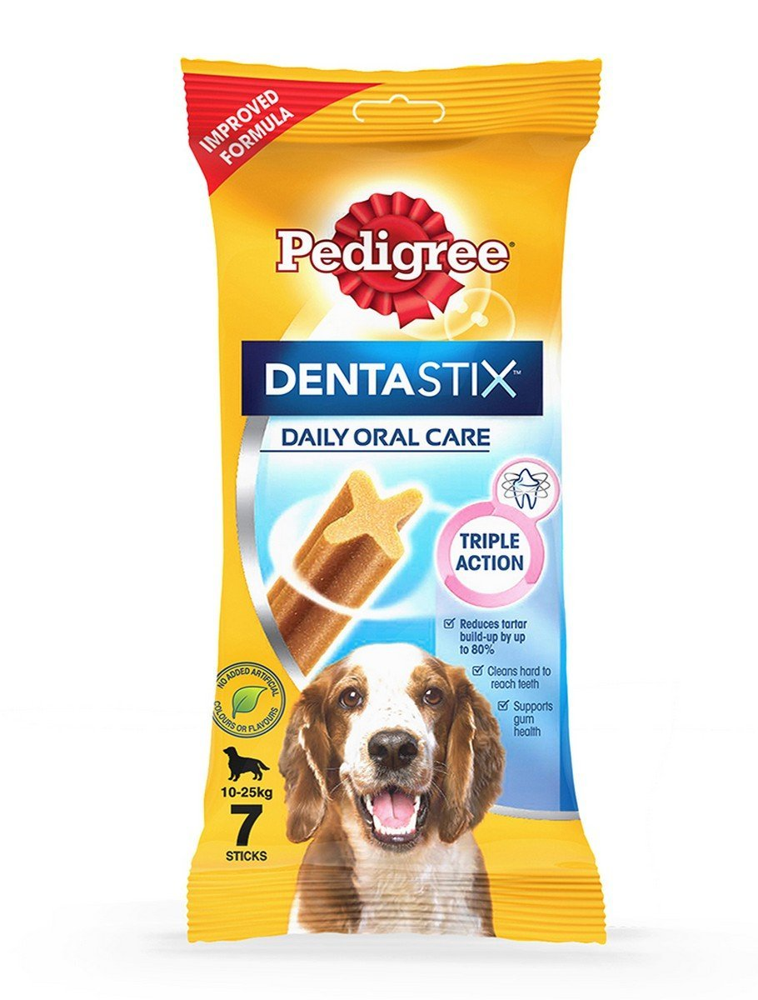
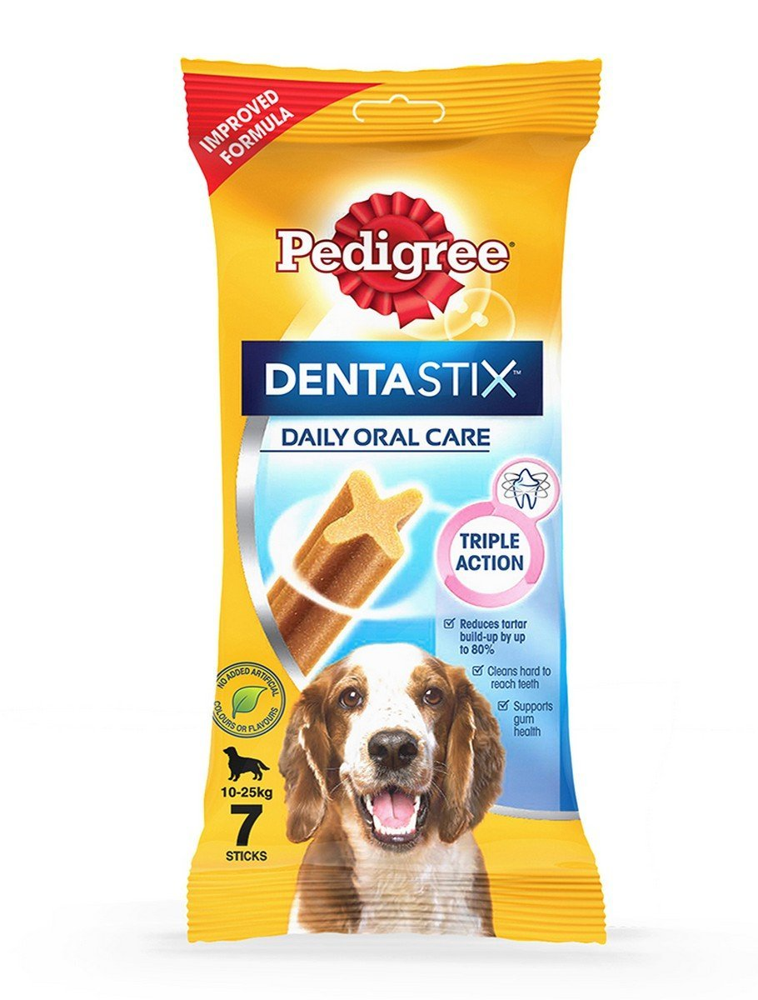

DOG TREAT REVIEW: DENTASTIX
Find out what the terriers think about this classic.
READ MORE
Got any questions, requests or fan mail for the dogs? Do not hesitate to contact us!
Find out what the terriers think about this classic.
READ MOREDog parks can be a great opportunity for dogs to run around and meet other dogs. What do Odette and Tuutikki think?
READ MORE There are two dogs, but first, there was a cat. Who is the mysterious Armi?
There are two dogs, but first, there was a cat. Who is the mysterious Armi?
The 11-year-old Jack-Cairn terrier Odette has quite a thick fur that can be a nuisance during the hot summer months. Join us for a trip to the trimmer!
READ MORE